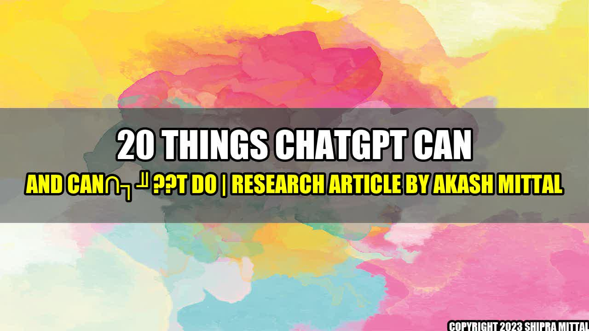

20 Things ChatGPT Can and Can't Do

Have you ever wished you had a personal assistant who could help you with everything from scheduling appointments to ordering food? Meet ChatGPT, the advanced chatbot powered by AI and machine learning that can make your daily life easier and more efficient. But what exactly can ChatGPT do? And what are its limitations?
Let's start with what ChatGPT can do:
- Provide instant customer service: With ChatGPT, customers can get answers to their questions and resolve issues faster than ever before.
- Handle multiple customer inquiries simultaneously: ChatGPT can manage several conversations at once, meaning customers don't have to wait in long queues or be put on hold.
- Automate repetitive tasks: ChatGPT can save time and resources by taking care of routine tasks such as data entry, appointment scheduling, and product orders.
- Offer personalized recommendations: By analyzing user data, ChatGPT can provide tailored suggestions for movies, music, restaurants, and more.
- Assist with everyday tasks: From setting alarms to checking the weather, ChatGPT can be your personal assistant for any task you need.
- Integrate with other apps and tools: ChatGPT can seamlessly work with other platforms such as Google Assistant, Alexa, and Slack.
- Increase productivity and efficiency: ChatGPT can improve workplace communication and collaboration, reducing the time and effort needed for projects.
- Provide accurate translations: ChatGPT can translate languages in real-time, breaking down language barriers and allowing for smoother communication.
- Engage customers and increase conversions: ChatGPT can assist businesses in providing top-notch customer experiences, increasing the chances of purchases and brand loyalty.
- Personalize marketing campaigns: By analyzing user data and behavior, ChatGPT can help businesses create targeted marketing campaigns.

Now, let's take a closer look at ChatGPT's limitations:
- Can't handle complex issues: While ChatGPT is great for answering simple questions, it may struggle with more complex problems that require human intervention.
- May not always understand context: ChatGPT's responses are driven by machine learning algorithms, meaning it may not always pick up on the nuances of language and context.
- May require extensive training: Before ChatGPT can be useful to a business, it may require extensive training and data input to ensure accuracy and efficiency.
- May have security risks: As with any technology, there is always the possibility of security breaches, which could expose confidential information to unauthorized parties.
- May not be suitable for all industries: Certain industries, such as healthcare and legal, require specialized knowledge that may not be within the scope of ChatGPT.
Real-Life Examples of ChatGPT in Action
Wondering how ChatGPT can benefit you in your daily life and work? Here are some real-life examples of how ChatGPT is being used today:
- UPS chatbot uses ChatGPT to assist customers with tracking packages, finding the nearest UPS location, and scheduling a pickup or delivery.
- Nike chatbot uses ChatGPT to help customers find the right pair of shoes by asking questions about their needs and preferences.
- Chase QuickPay chatbot uses ChatGPT to facilitate transactions between Chase customers, allowing for quick and easy money transfers.
- Starbucks Military chatbot uses ChatGPT to assist veterans and military spouses in finding jobs and career opportunities at Starbucks.
- Swiss Banks chatbot uses ChatGPT to help clients with their banking needs, such as checking account balances, transferring funds, and paying bills.
Conclusion
As ChatGPT continues to evolve and improve, it's clear that the benefits of this AI-powered chatbot are many. From customer service to workplace efficiency to personal assistance, ChatGPT has the potential to enhance every aspect of our daily lives. However, there are also limitations to consider, such as security risks and the need for specialized knowledge in certain industries. As with any technology, it's important to weigh the pros and cons before integrating ChatGPT into your life or business.
Reference URLs and Further Readings
Hashtags
#ChatGPT #chatbot #AI #machinelearning #virtualassistant #communication #technology #automation #customerservice #personalassistant
Akash Mittal Tech Article
Share on Twitter Share on LinkedIn